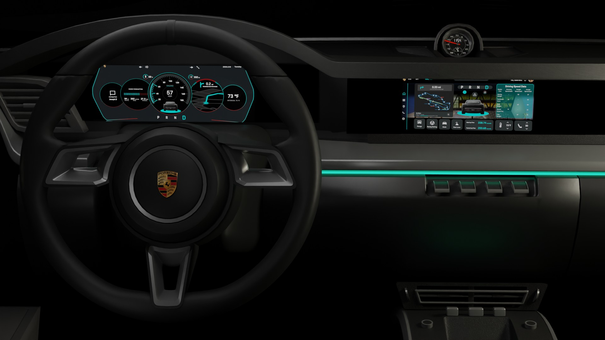
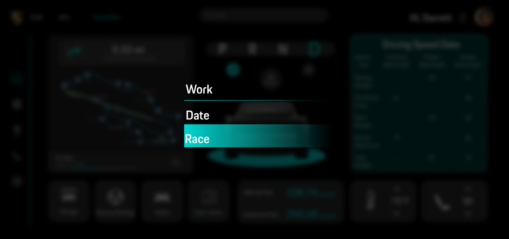
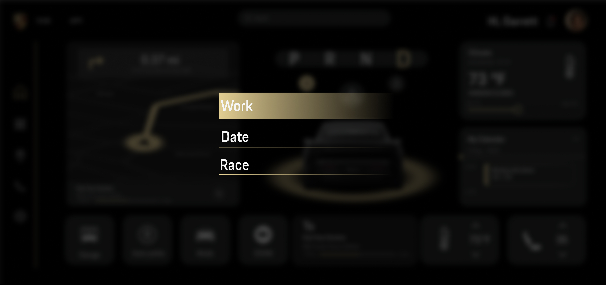
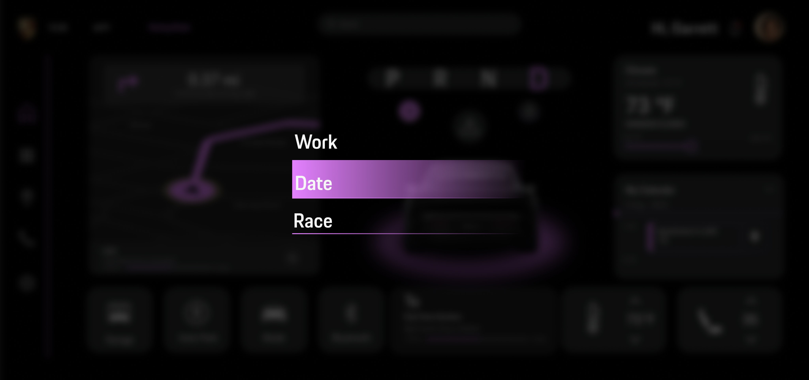
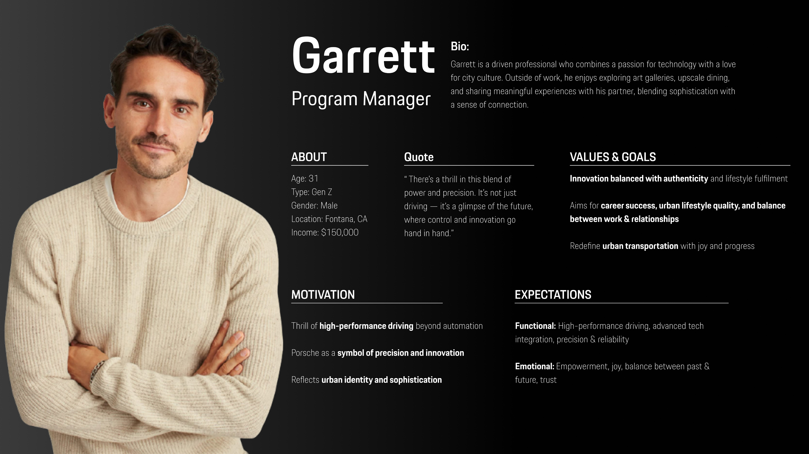
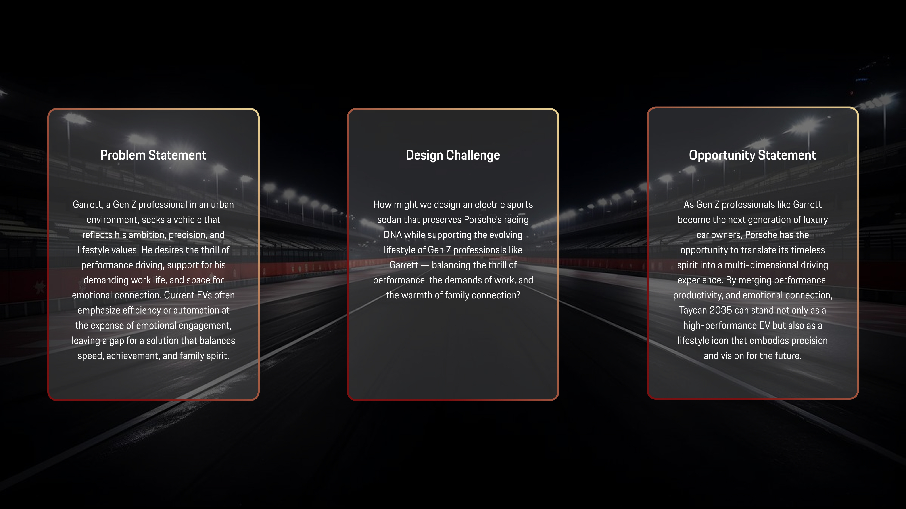
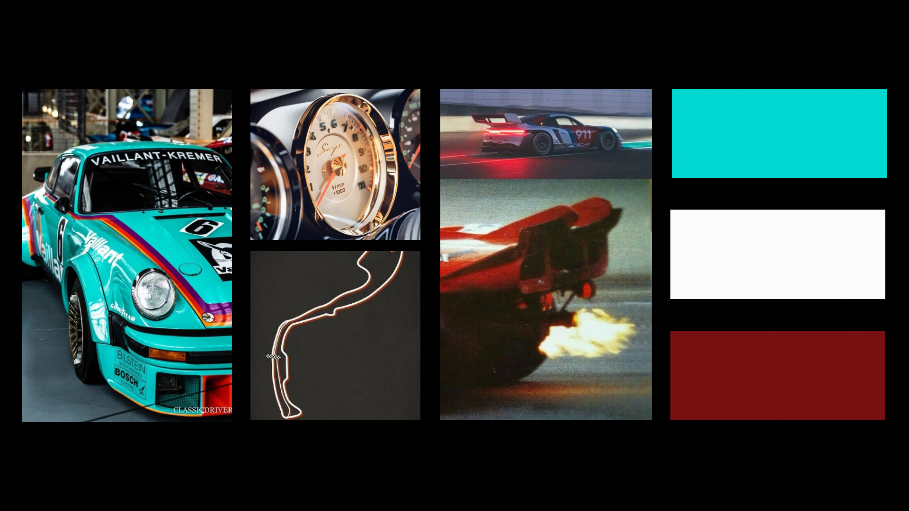
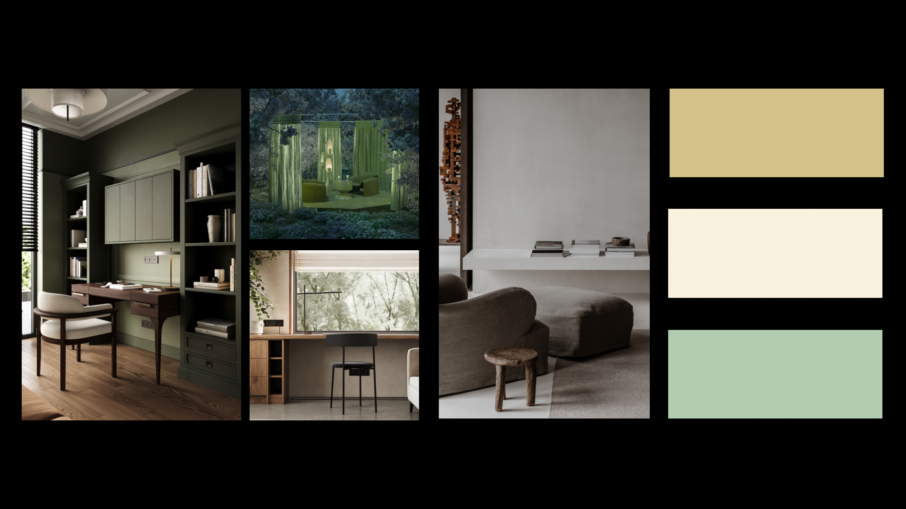
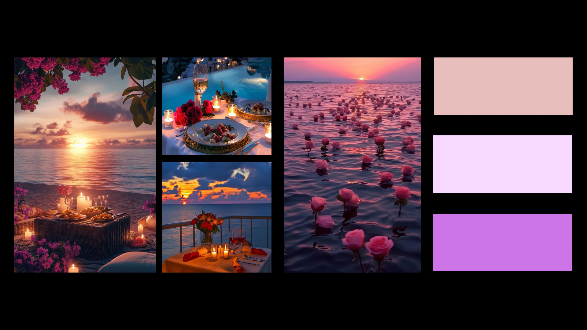

2024｜ Los Angeles ｜ School Project
Porsche Taycan 2035 Vision
Reimagining Porsche’s electric sports sedan through Racing, Working, and Romantic modes, connecting performance with the evolving lifestyles of future owners.
The Vision
Porsche Taycan 2035 reimagines the electric sports sedan as a multi-dimensional vehicle that preserves Porsche’s racing DNA while adapting to the evolving lifestyles of future owners. Through three distinct modes: Racing, Working, and Romantic. The concept explores speed, achievement, and emotional connection, extending Porsche’s legacy into a more sustainable and human-centered future.
“Beyond Driving.
Into Every Dimension of Life.”
Three Modes
The interface adapts to different moments of the owner’s life, shifting between performance, productivity, and emotional connection.



Modes Switching
Key Features
Users can access the application on the vehicle’s main display without disrupting other core functions. Depending on the selected driving mode, the system also offers complementary features tailored to different driving contexts.
In Racing Mode, to preserve the traditional driving experience of fuel-powered sports cars, users can customize sound, vibration, airflow, and G-force settings, while also raising the gear lever to enhance immersion.
Future Owner
Garrett represents a new generation of Porsche owners whose identities move fluidly between career ambition, driving passion, and personal relationships.

We identified gaps in current EVs and framed the Problem, Challenge, and Opportunity to guide the design of a multi-dimensional Taycan 2035.

Visual Direction


